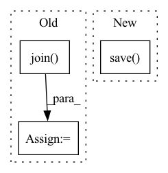

Pattern ID :8604
Before Change
def get_lm_corpus(datadir, cachedir, dataset, vocab, max_size=None):
if vocab == "word":
fn = os.path.join( cachedir, "cache." + str(max_size) + ".word.v1.pt")
elif vocab == "bpe":
fn = os.path.join(cachedir, "cache." + str(max_size) + ".bpe.v1.pt")
else:
raise RuntimeError("Unsupported vocab")After Change
corpus.train_and_encode()
with nv_utils.distributed.sync_workers() as rank:
if rank == 0:
corpus.save()
return corpus
def tokenize_raw(text, lang="en"):In pattern: SUPERPATTERN
Frequency: 3
Non-data size: 3
Instances Fragment ID: 29959993
Project Name: microsoft/archai
Commit Name: d9cf55b6736359576e6601d4223fdbef27bc28f0
Time: 2022-12-16
Author: shitals@microsoft.com
File Name: archai/nlp/nvidia_transformer_xl/data_utils.py
M Class Name: AnonimousClass
N Class Name: AnonimousClass
M Method Name: get_lm_corpus(5)
N Method Name: get_lm_corpus(5)
M Parent Class:
N Parent Class:
M File Name: archai/nlp/nvidia_transformer_xl/data_utils.py
N File Name: archai/nlp/nvidia_transformer_xl/data_utils.py
M Start Line: 317
M End Line: 332
N Start Line: 26
N End Line: 32
Before Change
result = np.argmax(k_fold_result, axis=-1)
df = pd.DataFrame({"node_idx": test_nid, "label": result})
nodes_path = os.path.join( "../final_dataset", "IDandLabels.csv")
nodes_df = pd.read_csv(nodes_path, dtype={"Label": str})
df["label"] = df["label"].apply(id2name)
mged = pd.merge(df, nodes_df[["node_idx", "paper_id"]], on="node_idx", how="left")
result_csv = os.path.join(dataset_cfg["OUT_PATH"], "{}.csv".format(dataset_cfg["TEST_PREFIX"]))
pd.DataFrame({"id": mged["paper_id"], "label": mged["label"]}).to_csv(result_csv, index=False)After Change
result_npy_path = os.path.join(
dataset_cfg["OUT_PATH"], "{}_fold{}.npy".format(dataset_cfg["TEST_PREFIX"], index)
)
np.save( result_npy_path, result)
k_fold_result.append(result)
// 保存每一折的结果
k_fold_result = np.array(k_fold_result) Fragment ID: 29959994
Project Name: langgege-cqu/maxp_dgl
Commit Name: de8c9a09e551d9dfc26acbffbad6d98c21da5b63
Time: 2021-12-21
Author: lpancake@foxmail.com
File Name: maxp_model_zlm/final_model/unimp/test_yaml_k_fold.py
M Class Name: AnonimousClass
N Class Name: AnonimousClass
M Method Name: test(4)
N Method Name: test(4)
M Parent Class:
N Parent Class:
M File Name: maxp_model_zlm/final_model/unimp/test_yaml_k_fold.py
N File Name: maxp_model_zlm/final_model/unimp/test_yaml_k_fold.py
M Start Line: 125
M End Line: 155
N Start Line: 125
N End Line: 139
Before Change
recipe_path = os.path.join(
output_dir, RECIPE_TEMPLATE.format(f"_{index:02d}" if index > 0 else "")
)
checkpoint_path = os.path.join( self.args.output_dir, RECIPE_NAME)
if os.path.isfile(checkpoint_path):
self.manager = ScheduledModifierManager.compose_staged(
base_recipe=checkpoint_path, additional_recipe=self.managerAfter Change
base_recipe=str(self.arch_manager),
additional_recipe=str(self.manager),
)
composed_manager.save( recipe_path)
else:
self.manager.save(recipe_path)
Fragment ID: 29959991
Project Name: neuralmagic/sparseml
Commit Name: 23bea1713f57363caca92b76cb08f0ea2731b1e6
Time: 2022-04-08
Author: 97082108+dbogunowicz@users.noreply.github.com
File Name: src/sparseml/transformers/sparsification/trainer.py
M Class Name: RecipeManagerTrainerInterface
N Class Name: RecipeManagerTrainerInterface
M Method Name: save_model(3)
N Method Name: save_model(3)
M Parent Class:
N Parent Class:
M File Name: src/sparseml/transformers/sparsification/trainer.py
N File Name: src/sparseml/transformers/sparsification/trainer.py
M Start Line: 383
M End Line: 393
N Start Line: 373
N End Line: 384